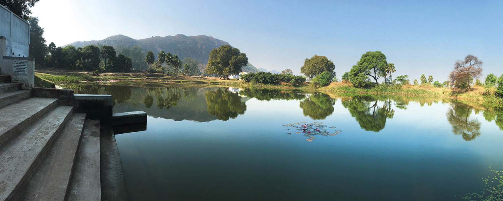
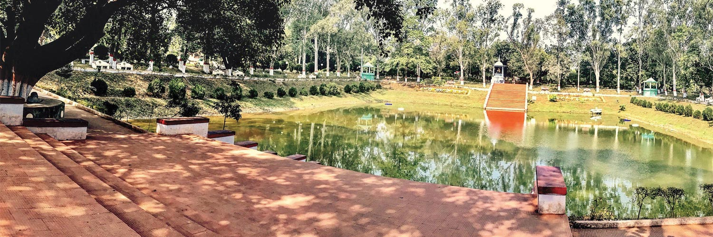
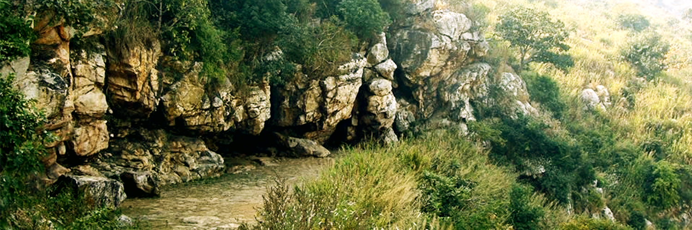
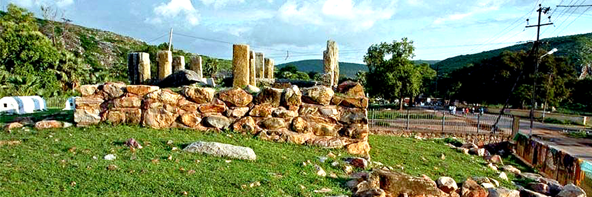

Rajgir just 15 kms from Nalanda is located the complex of
temples and monasteries.
The place is called Rajgir. It is one of the most important tourist places in India.
Being located in a valley, Rajgir is a very scenic place. The small hill grit town
is covered with lush green forest which add to the beauty of the place. Rajgir was
the capital of the Magadh Mahajanpad (State) when Patliputra was not formed. In
those days it was called Rajgrih. Rajgir or Rajgrih means the home of Royalty. This
place has been associated with Lord Buddha and Buddhism. Buddha not only spent many
years in Rajgir but also delivered sermons here and proselytized emperor Bimbisar
at the Griddhakoota hill. The Jivekarmavan monastery was the favorite residence
for Buddha. Even Bimbisar gave Venuvan Vihar to Buddha for his residence. It is
said that it was at Rajgir that physician treated Buddha, Jivak after he was injured
by his cousin Devdatta.The teachings of Buddha was penned down at Rajgir and it
was also the venue for the first Buddhist Council. Today Rajgir has come up as one
of the most important pilgrimage for the Buddhist.Rajgir also has some very beautiful
Hindu and Jain temples which attracts Hindus and Jains also to the place. Not only
as a place for worship, Rajgir has come up as health and winter resort with its
warm water ponds. These ponds are said to contain some medicinal properties which
help in the cure of many skin diseases. The added attraction of Rajgir is the Ropeway
which takes you uphill to the Shanti Stupa and Monasteries built by the Japanese
Devotees on top of the Ratnagiri hills.
JETHIAN VILLAGE

Seven years after he attained Buddhahood, Siddhartha fulfilled his promise to KngBimbisara by
returning to Rajagaha to teach the Dhamma. When the Buddha arrived in the city, accompanied by
the highest accomplished three Kassapa brothers and their 1000 fire-worshippers turned bhikkus,
the townsmen were astounded. Hearing about the large group of noble mendicants, King Bimbisara
came rushing to the Palm Grove with a group of Brahmins.
The King was unsure – seeing the large congregation of solemn meditators – whether the Buddha
was the leader or the famous UruvelaKashyap. Sensing their confusion, UruvelaKassap prostrated
at the Buddha’s feet and acknowledged him as leader. Highly impressed at the elder’s act of
reverence, King Bimbisara requested the Buddha to give them a teaching. The Buddha was glad to
see his old friend and he taught the King and his ministers the teachings on benefits of
charity, ethics as a foundation for liberation, the harm of over indulgence in sensual
pleasures, futility of conceit, bliss of renunciation, and the Four Noble Truths.
Functional Information:
The King was unsure – seeing the large congregation of solemn meditators – whether the Buddha was
the leader or the famous UruvelaKashyap. Sensing their confusion, UruvelaKassap prostrated at
the Buddha’s feet and acknowledged him as leader. Highly impressed at the elder’s act of
reverence, King Bimbisara requested the Buddha to give them a teaching. The Buddha was glad to
see his old friend and he taught the King and his ministers the teachings on benefits of
charity, ethics as a foundation for liberation, the harm of over indulgence in sensual
pleasures, futility of conceit, bliss of renunciation, and the Four Noble Truths.
VENUVANA Bamboo Grove

Highly pleased and elated by the talk, the King invited the entire Sangha to the royal courtyard
for the next day’s meal. The king also offered his pleasure park, the 100 acres Bamboo Grove
(Veluvana), to the Sangha. The Buddha accepted the donation.This pleasure park, with its lotus
pond, pavallions, flower gardens, waling paths, and clusters of bamboo trees, is the site of
Sangha’s first monastery.From that point onwards, bhikkus were allowed to dwell in permanent
monasteries.
The Chinese pilgrim, XuanZang spent two years staying in the monastery who referred this site as
YastivanaVihara. He explained that the name of the site was derived from the time a man, who
measured the Buddha’s height with a stick (lathi) made from the palmwood, and threw it on the
ground. The stick took root and eventually spread, thus becoming Lathivana or Yasthivana.
In front of the water reservoir or lotus pond in Veluvana, there is a shrine with a black Buddha
statue. The location was perfect for the Buddha’s Order, neither too far from the town, nor too
near, accessible , yet serene. At the Bamboo Grove, the Buddha spent his second, third, and
fourth rainy seasons after his enlightenment. Its congenial grounds became the sceme for many
discourses. There are several areas of the parks, mentioned in the Pali canon, such as
Squirrel’s Feeding Place, The Peackock Feeding Place, and the lotus pond. The only identifiable
place today is the lotus pond.
Functional Information:
Vishwa Santi Stupa is a stachu for Peace foe world
.
SAPTAPARNI CAVE (Sattapanni Cave)

To reach this location on the Vaibhara Hill, one has to take a stone path beyond Lakshmi Narain
temple near Rajgir’s famous sulphur hot spring. The Buddha stayed in this cave a few times, but
it is celebrated for bbeing the venue of the First Council (PatthamaDhamma-Sangti) after the
Buddha’s death.
The elder Mahakassapa foresaw the necessity of organizing the Buddha’s teaching and community in
order to prevent erosion of the Buddha’s work. Three months after Bddha’s passing, Mahakassapa
summoned 500 senior awakened bhikkus to compile and authenticate the Buddha’s teaching, which
would be handed over for posterity.King Ajatsatru sponsored the seven month long event and
during the council, the recently awakened Ananda, gifted with extraordinary memory, recited the
Sutta and abhidhammaPitakas. The recitatation included the Buddha’s actual discourses, where
they were given and on whose account. Mahakassapa appointed Upali, an authority on monastic
discipline (vinaya), to recite the code of conduct, as well as the circumstances that caused
these rules to be formulated. When both Ananda and Upali had finished their recitations, the
entire assembly repeated them together to show their unanimous acceptance. From that time
onwards, the Buddha’s teachings were preserved in this fashion until the Fourth Council held in
Sri Lanka in 29 BCE, when they were written on palm leaves.
From the bird’s eye view atop the hill, the paddy fields below are reminiscent of the time when
the Buddha suggested to Ananda that the bhikkus’ robes should be cut and sewn in a similar
pattern, symbolizing bhikkus as a fertile land in which seeds of merit and virtue are sown to
benefit the present and future generations. The symbolic tradition is still kept today.
Functional Information:
This peak is the highest peak in rajgir from where we can see beauty of rajgir.
VULTURE PEAK (Gridhakut or Gijjhakta)

There are two ways to reach to the peak. The first option is to walk for 20 minutes beyond the
stalls up the stairway, and then make a right at the fork in the path. According to XuanZang,
the first cave on your right is said to be the where Ananda attained enlightenment before the
First Council. The second cave on your right is said to be Boar’s Grotto, where Sariputta became
an arahant. At the end of the main path you come across a stairway that leads to the top of the
mountain containing ancient ruins and a contemporary shrine.
The Buddha shuttled between the Bamboo Grove and this crag, whose natural silence made it an
ideal place for serious meditation. Many of the Buddha’s students, including Sariptta and
Ananda, became arahants in one of the caves in this rocky hill. According to a fable, disturbed
by a wicked vulture’s pecking the shaved head of the monks while they were meditating, the
Buddha froze the vulture into a boulder and that’s how its called the Vulture Peak.
Functional Information:
The ropeway is a means of travel in the mountains of Rajgir.
JETHIAN VILLAGE
Seven years after he attained Buddhahood, Siddhartha fulfilled his promise to KngBimbisara by
returning to Rajagaha to teach the Dhamma. When the Buddha arrived in the city, accompanied by
the highest accomplished three Kassapa brothers and their 1000 fire-worshippers turned bhikkus,
the townsmen were astounded. Hearing about the large group of noble mendicants, King Bimbisara
came rushing to the Palm Grove with a group of Brahmins.
The King was unsure – seeing the large congregation of solemn meditators – whether the Buddha
was the leader or the famous UruvelaKashyap. Sensing their confusion, UruvelaKassap prostrated
at the Buddha’s feet and acknowledged him as leader. Highly impressed at the elder’s act of
reverence, King Bimbisara requested the Buddha to give them a teaching. The Buddha was glad to
see his old friend and he taught the King and his ministers the teachings on benefits of
charity, ethics as a foundation for liberation, the harm of over indulgence in sensual
pleasures, futility of conceit, bliss of renunciation, and the Four Noble Truths.
The King was unsure – seeing the large congregation of solemn meditators – whether the Buddha was the leader or the famous UruvelaKashyap. Sensing their confusion, UruvelaKassap prostrated at the Buddha’s feet and acknowledged him as leader. Highly impressed at the elder’s act of reverence, King Bimbisara requested the Buddha to give them a teaching. The Buddha was glad to see his old friend and he taught the King and his ministers the teachings on benefits of charity, ethics as a foundation for liberation, the harm of over indulgence in sensual pleasures, futility of conceit, bliss of renunciation, and the Four Noble Truths.
VENUVANA Bamboo Grove
Highly pleased and elated by the talk, the King invited the entire Sangha to the royal courtyard for the next day’s meal. The king also offered his pleasure park, the 100 acres Bamboo Grove (Veluvana), to the Sangha. The Buddha accepted the donation.This pleasure park, with its lotus pond, pavallions, flower gardens, waling paths, and clusters of bamboo trees, is the site of Sangha’s first monastery.From that point onwards, bhikkus were allowed to dwell in permanent monasteries.
The Chinese pilgrim, XuanZang spent two years staying in the monastery who referred this site as
YastivanaVihara. He explained that the name of the site was derived from the time a man, who
measured the Buddha’s height with a stick (lathi) made from the palmwood, and threw it on the
ground. The stick took root and eventually spread, thus becoming Lathivana or Yasthivana.
In front of the water reservoir or lotus pond in Veluvana, there is a shrine with a black Buddha
statue. The location was perfect for the Buddha’s Order, neither too far from the town, nor too
near, accessible , yet serene. At the Bamboo Grove, the Buddha spent his second, third, and
fourth rainy seasons after his enlightenment. Its congenial grounds became the sceme for many
discourses. There are several areas of the parks, mentioned in the Pali canon, such as
Squirrel’s Feeding Place, The Peackock Feeding Place, and the lotus pond. The only identifiable
place today is the lotus pond.
Vishwa Santi Stupa is a stachu for Peace foe world .
SAPTAPARNI CAVE (Sattapanni Cave)
To reach this location on the Vaibhara Hill, one has to take a stone path beyond Lakshmi Narain temple near Rajgir’s famous sulphur hot spring. The Buddha stayed in this cave a few times, but it is celebrated for bbeing the venue of the First Council (PatthamaDhamma-Sangti) after the Buddha’s death.
The elder Mahakassapa foresaw the necessity of organizing the Buddha’s teaching and community in
order to prevent erosion of the Buddha’s work. Three months after Bddha’s passing, Mahakassapa
summoned 500 senior awakened bhikkus to compile and authenticate the Buddha’s teaching, which
would be handed over for posterity.King Ajatsatru sponsored the seven month long event and
during the council, the recently awakened Ananda, gifted with extraordinary memory, recited the
Sutta and abhidhammaPitakas. The recitatation included the Buddha’s actual discourses, where
they were given and on whose account. Mahakassapa appointed Upali, an authority on monastic
discipline (vinaya), to recite the code of conduct, as well as the circumstances that caused
these rules to be formulated. When both Ananda and Upali had finished their recitations, the
entire assembly repeated them together to show their unanimous acceptance. From that time
onwards, the Buddha’s teachings were preserved in this fashion until the Fourth Council held in
Sri Lanka in 29 BCE, when they were written on palm leaves.
From the bird’s eye view atop the hill, the paddy fields below are reminiscent of the time when
the Buddha suggested to Ananda that the bhikkus’ robes should be cut and sewn in a similar
pattern, symbolizing bhikkus as a fertile land in which seeds of merit and virtue are sown to
benefit the present and future generations. The symbolic tradition is still kept today.
This peak is the highest peak in rajgir from where we can see beauty of rajgir.
VULTURE PEAK (Gridhakut or Gijjhakta)
There are two ways to reach to the peak. The first option is to walk for 20 minutes beyond the stalls up the stairway, and then make a right at the fork in the path. According to XuanZang, the first cave on your right is said to be the where Ananda attained enlightenment before the First Council. The second cave on your right is said to be Boar’s Grotto, where Sariputta became an arahant. At the end of the main path you come across a stairway that leads to the top of the mountain containing ancient ruins and a contemporary shrine.
The Buddha shuttled between the Bamboo Grove and this crag, whose natural silence made it an ideal place for serious meditation. Many of the Buddha’s students, including Sariptta and Ananda, became arahants in one of the caves in this rocky hill. According to a fable, disturbed by a wicked vulture’s pecking the shaved head of the monks while they were meditating, the Buddha froze the vulture into a boulder and that’s how its called the Vulture Peak.
The ropeway is a means of travel in the mountains of Rajgir.